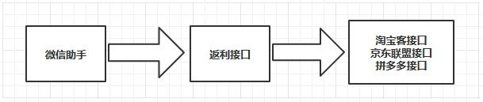
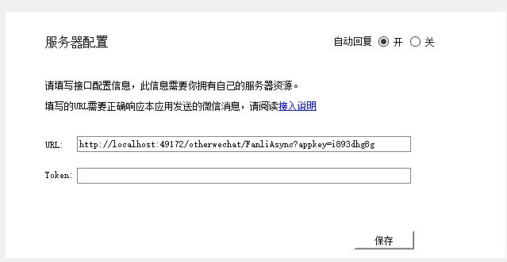
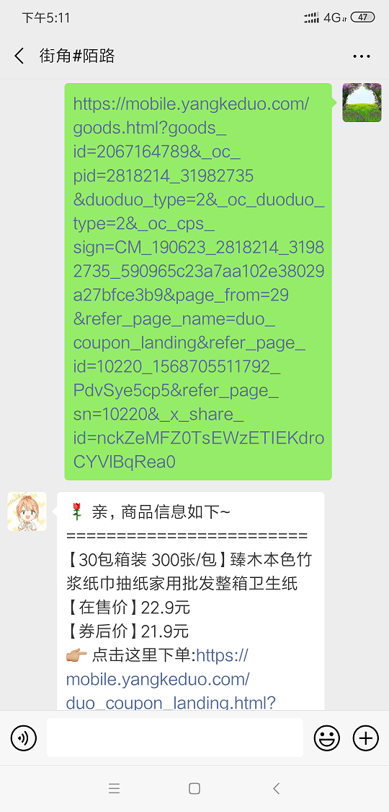
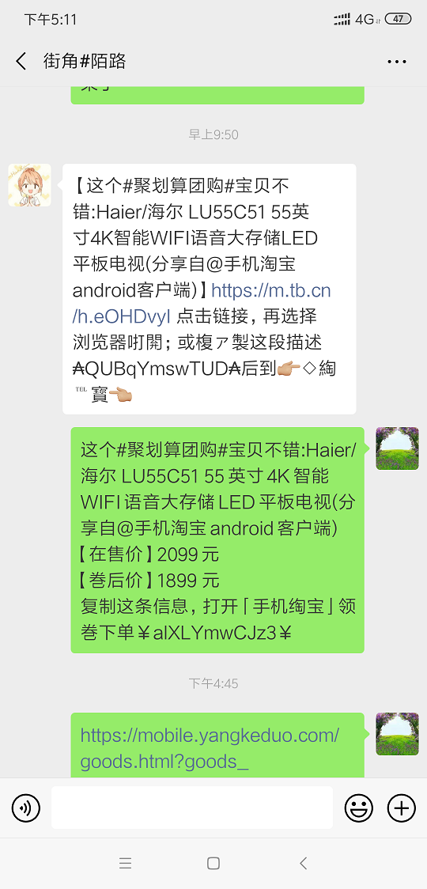

之前做了一个淘宝客返利微信公众号，后来很多人提到过微信返利机器人，现在微信助手开发好了，可以通过微信助手接口功能实现微信返利机器人。
流程如下：

下面是c#实现返利接口的部分代码：
[HttpPost]
public async Task<ActionResult> FanliAsync(string appkey)
{
WeixinTBKConfigEntity configEntity = GetConfigEntity(appkey);
if (configEntity == null)
{
LogHelper.WriteLog(typeof(OtherWechatController), "appkey接口验证时，appkey不存在");
return Content("验证失败。appkey接口验证时，appkey不存在");
}
Request.InputStream.Position = 0;
Stream stream = Request.InputStream;
string json = string.Empty;
if (stream.Length != 0)
{
StreamReader streamreader = new StreamReader(stream);
json = streamreader.ReadToEnd();
}
WeChatToolMessage responseMsg = new WeChatToolMessage();
if (string.IsNullOrEmpty(json))
{
return Json(responseMsg);
}
WeChatToolMessage msg = JsonConvert.DeserializeObject<WeChatToolMessage>(json);
if (string.IsNullOrEmpty(msg.wxid) || string.IsNullOrEmpty(msg.content))
{
return Json(responseMsg);
}
string content = msg.content;
string responseStr = string.Empty;
if (content.Contains("yangkeduo.com"))
{
//访问拼多多接口
responseStr = await GetPddCouponAsync(configEntity, msg);
}
else if (content.Contains("jd.com"))
{
if (!string.IsNullOrEmpty(configEntity.JdPID))
{
//访问京东联盟接口
responseStr = GetJdCoupon(configEntity, msg);
}
}
else
{
//访问淘宝联盟接口
responseStr = GetTBKCouponByPassword(configEntity, msg.content);
}
responseMsg.wxid = msg.wxid;
responseMsg.content = responseStr;
return Json(responseMsg);
}发布接口之后将接口地址填入微信助手“自动回复”菜单url输入框中，如下图所示：

下面就可以开始查券了，是不是很简单。


微信助手可以到这里下载：http://blog.yshizi.cn/104.html
需要返利接口请加微信znana2019